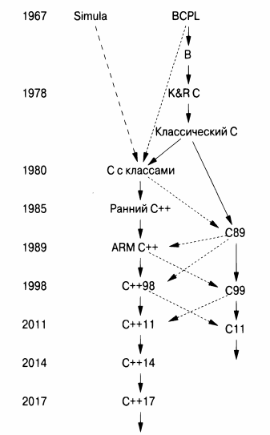

⇐16.3 Совместимость С/С++ 16.3.2 Проблемы совместимости⇒
У классического С два основных потомка: ISO С и ISO С++. За прошедшие годы и десятилетия эти языки развивались с разной скоростью и в разных направлениях. Одним из результатов является то, что каждый язык обеспечивает поддержку традиционного программирования в стиле С немного по-своему. Получаемая несовместимость может сделать несчастными программистов, которые используют и С, и С++, для тех, кто пишет на одном языке программирования с использованием библиотек, реализованных на другом, а также для разработчиков библиотек и инструментов для С и С++.
Почему я назвал С и С++ братьями? Давайте посмотрим на упрощенное генеалогическое дерево.
Сплошная линия означает массовое наследование элементов, штриховая линия с длинными штрихами - заимствование основных функциональных возможностей, а штриховая линия с обычными штрихами - заимствование незначительных элементов. Здесь ISO С и ISO С++ выглядят как два главных потомка K&R С [29] - как братья. Каждый из них несет в себе ключевые аспекты классического С, и ни один из них не совместим на 100% с классическим С. Я взял термин "классический С" с наклейки, прикрепленной к терминалу Денниса Ритчи. Это K&R С плюс перечисления и присваивание struct. BCPL определен в [38], а С89 - в [2].
Обратите внимание, что различия между С и С++ не обязательно являются результатом изменений в С, сделанных в С++. В некоторых случаях несовместимость возникает из-за несовместимого переноса в С функциональных возможностей, длительное время работавших в С++. Примерами являются возможность присваивания Т* переменной типа void* и компоновка глобальных констант [53]. Иногда функциональная возможность могла быть принята в С несовместимым образом даже после того, как она стала частью стандарта ISO С++ - например, детали значения спецификатора inline.